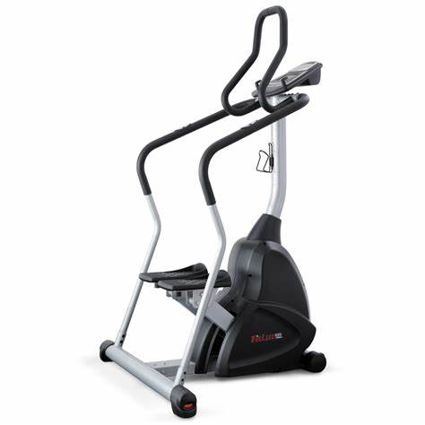

Súlyzók és edzőgépek
A testépítéshez leginkább használt felszerelések közé tartoznak az úgynevezett szabadsúlyok, mint a kézisúlyzók, a különféle súlyzórudak, melyekre súlytárcsák kerülnek, valamint a gömbsúlyzók. Ezen felül használnak egy- vagy többfunkciós edzőgépeket is.
A teljesség igénye nélkül a testépítők által használt felszerelések az alábbiak.
Szabadsúlyok
kézisúlyzó; egyenes súlyzórúd; franciarúd; súlytárcsa; gömbsúlyzó (kettlebell).
Padok
szabadsúlyos Scott-pad (bicepsz, tricepsz); fekvenyomópad; egyenes pad; dönthető pad; negatív pad; ülőpad; haspad; hipernyújtó-hajlító pad; evezőpad
Keretek
húzódzkodókeret; tolódzkodókeret; guggolókeret; Smith-erőkeret; Sissy-guggolóállvány.
Edzőgépek
rögzített súlyos Scott-gép (bicepsz); lapsúlyos, csigás kábeltorony (többfunkciós); tárcsa- vagy lapsúlyos kombinált gépek (többfunkciós, felsőtestedzéshez); tárogatógép; lábtológép; tárcsás vagy lapsúlyos vádligép; combfeszítő gép; combhajlító gép; combközelítő
és -távolító gép.
Kardiógépek

Linkek:
Mike Mentzer
Testépités